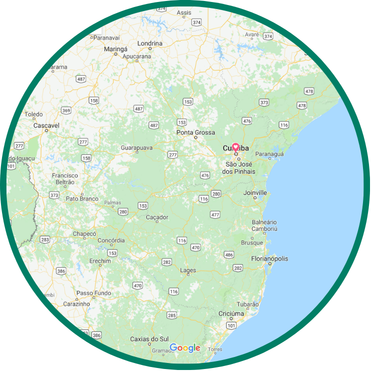

Localização & Horários
Onde Nos Encontrar
A Clínica Nutri Life está localizada no coração do bairro Jardins, na Avenida das Palmeiras, nº 1250, Bloco B, Sala 804.
Situada em uma área de fácil acesso e extremamente arborizada, a clínica fica no Edifício Corporate Park, exatamente em frente à Praça da Imprensa e a apenas dois blocos da Estação Central do Metrô.
Horário de Atendimento
Segunda a Sexta: 08h às 20h
Sábados: 08h às 14h
